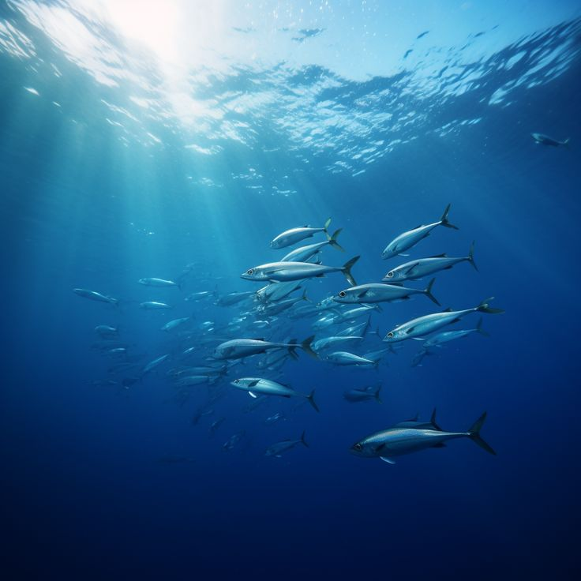
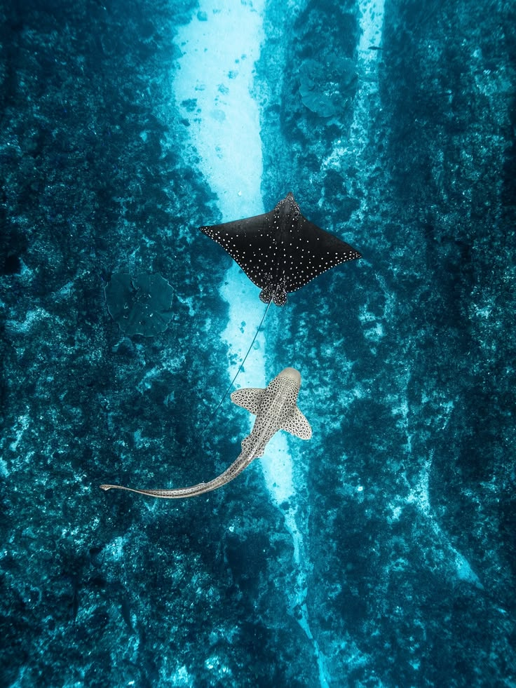

Profondeur: 0 à ~200 mètres
Température: 15°C à 30°C
Pression: Faible à modérée
La zone épipélagique représente près de 90% de toutes les eaux marines, puisqu'elle correspond à l'ensemble du volume des eaux situées au large de la zone néritique.
Malgré cette abondance géographique, elle ne renferme que 10% des espèces marines, principalement concentrées dans la zone superficielle, où croît le phytoplancton grâce à la pénétration des rayons solaires. Le phytoplancton de la zone épipélagique océanique assure près de 40% de la photosynthèse de la biosphère.
La partie profonde et plus obscure de la zone épipélagique océanique est peu fréquentée, bien que certaines espèces de poissons y transitent où y vivent.